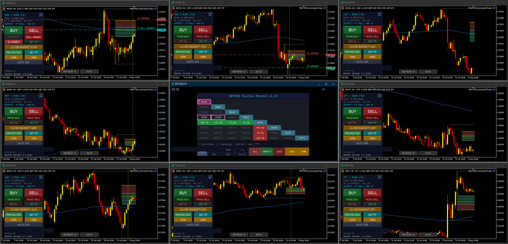
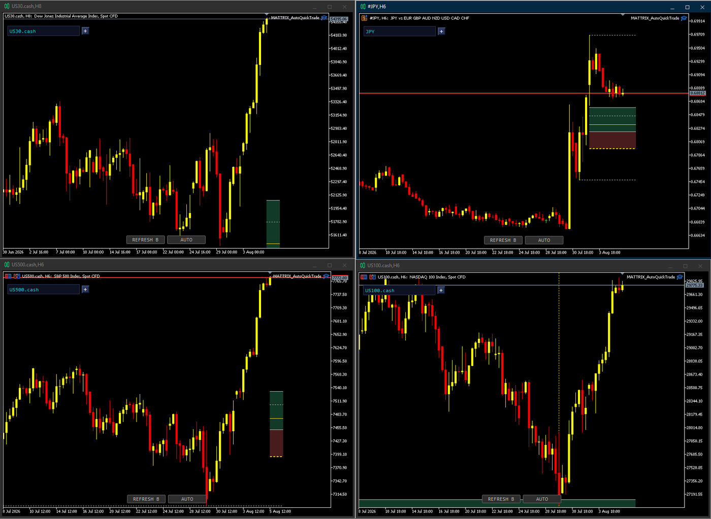

Last Friday the Big8 baskets printed something unusual: every single JPY leg turned up at once, while CAD went down across the board. No news had broken yet. The story only arrived three days later.
A move in one pair is noise. A move across all seven legs of a basket is flow — somebody large is doing something. That is the whole point of looking at currencies as baskets instead of pairs: you see the actor, not the symptom.
What the chart showed on 31 July was later confirmed as a coordinated yen-buying intervention by Japan’s Ministry of Finance and the U.S. Treasury — the first joint operation of its kind since 1998. The yen had touched a roughly 40-year low near 164 before snapping back hard.
The Treasury reportedly funded part of the operation by selling euros to buy yen. That is exactly why the strength showed up simultaneously against EUR and USD — and why it was visible on the basket long before any headline named it.

At the same time CAD was sold across the board. Different driver, same readability: oil fell sharply after officials raised hopes of a diplomatic path in the Iran conflict and better flows through the Strait of Hormuz. Oil down → CAD down. The basket showed the result; the reason came later.
Here is where it gets interesting. Textbook says: yen up → carry trades unwind → equities fall. August 2024 is the scar everyone remembers. This time the Dow and S&P closed at record highs instead.
| August 2024 | August 2026 | |
|---|---|---|
| Trigger | BoJ hike + Fed cut bets | FX intervention only |
| Rate gap | closing | unchanged |
| Forced unwind | yes | no |
| Yen strength | persistent | faded within days |
| Equities | crash | record highs |

An intervention moves the price. It does not change the interest-rate differential — and the differential is what makes a carry trade worth holding. Nobody was forced to deleverage, so nothing broke. Within days the yen had already given most of it back.
Meanwhile equities had their own fuel: solid manufacturing data, strong corporate guidance, and falling oil on the same Iran headlines that sank CAD.
The divergence wasn’t a contradiction — it was a diagnosis. A genuine carry unwind shows yen strength and equity weakness together. Here the yen moved alone. Checking the indices was the right control question, and the answer told you what kind of move you were in.
The pair trader sees USDJPY drop and wonders what happened to the dollar. The basket trader sees JPY up against everything and knows immediately: this is yen-specific, not dollar-specific. Same data, different altitude.
Which is the practical lesson: you don’t need to predict an intervention. You need to recognise breadth when it appears, wait for spreads to normalise, and let the setup come to you. The calendar tells the eagle where to circle; the baskets tell it when to dive.
This is one episode, not a rule. Breadth is a signal, not a guarantee — and reading a cause into a chart after the fact is the easiest mistake in this business. The move was tradable because it was broad, not because anyone knew who was buying.